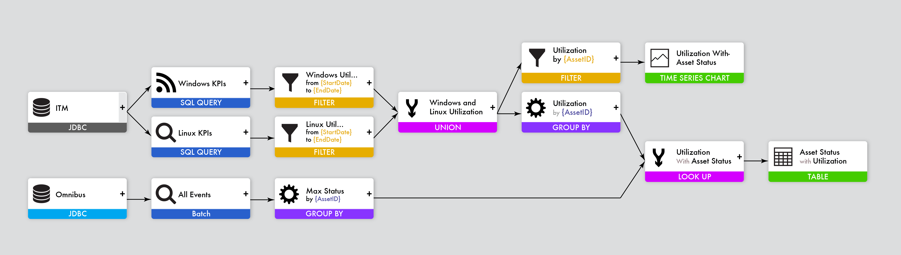
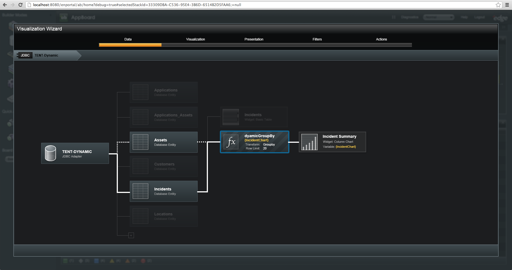
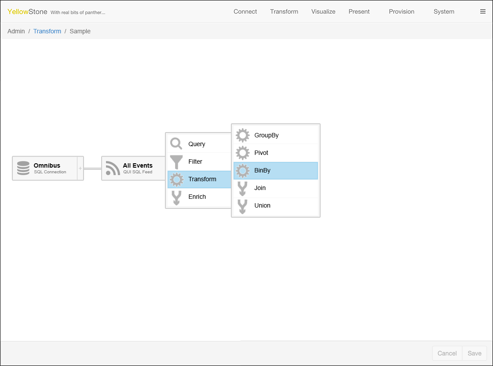
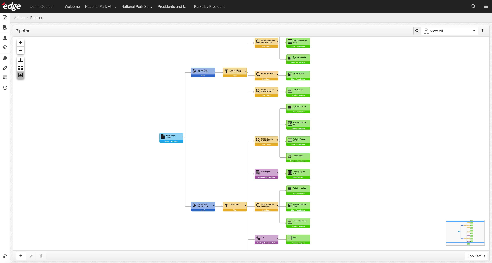

Pipes UI
Pipes UI was a graphical query builder. The goal was to show how data sets in the system were related to each other, and allow those with permission to transform raw data so that it could be effectively visualized.
- Company:Edge Technologies
- Product:Edge Suite
- Completed:17 Aug 2018
Challenge
Design a Query Builder that doesn't require a user to write SQL
Pipes UI
The real driver for the Pipes UI were data transforms, operations like JOIN & UNION that take two upstream data sources and mash them together into a single result set. It was very common for our customers to have to perform a JOIN in order to enrich data with severity information, or with Lat and Long information for a map. 
Early Concepts
The original concept was created for the Appboard product in late 2011. Tragically, Appboard was written in MXML (Flex), so this was put on hold while we grappled with larger issues. 
A UI for Data Prep
Once we migrated off of Flex and into Angular, we continued to notice the same problem. Raw Data from a source was rarely able to be visualized out of the gate. Administrators almost always needed to "prep" the data for a particular visualization type. For example, an Admin would need to GROUPBY a field name in order to get counts to display on a bar chart. The Pipe UI concept was again floated as a way to provide tooling needed for this "data preparation" task. It would allow admin users to not only see what was happening, but it would allow them to transform data without leaving the product. 
Final Result
The end result was a powerful relational view of the data set inside edge suite. It gave data administrators the tools they needed to transform raw data into something that could be visualized. 
<